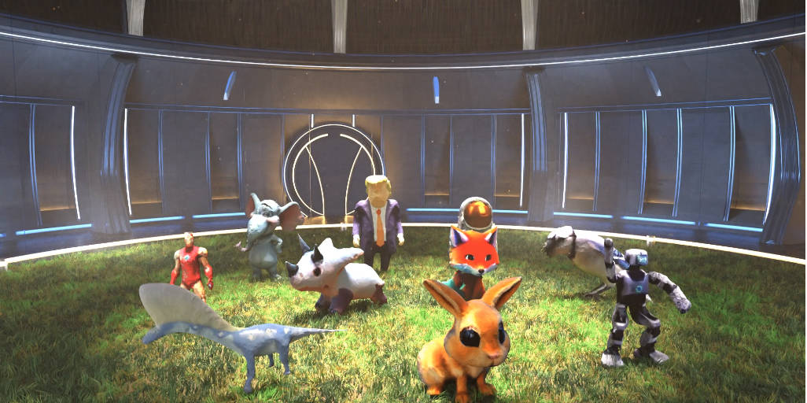

|
Yiming Chen I am currently a second-year Ph.D. student at the Shanghai Innovation Institute (SII), jointly affiliated by Westlake University and Zhejiang University, under the supervision of Prof. Li Zhang and Prof. Peidong Liu. Before that, I obtained my Bachelor’s degree from Tongji University. My research interests are in 3D vision and spatial reasoning. |
Research |

|
Reasoning in Space via Grounding in the World
Yiming Chen, Zekun Qi, Wenyao Zhang, Xin Jin, Li Zhang, Peidong Liu arxiv preprint webpage / arXiv / code The first 3D-LLM that bridge 3D visual grounding and spatial reasoning. |
|

|
DreamMesh4D: Video-to-4D Generation with Sparse-Controlled Gaussian-Mesh Hybrid Representation
Zhiqi Li*, Yiming Chen*, Peidong Liu NeurIPS, 2024 webpage / arXiv / code A hybrid gaussian-mesh representation for high quality video-to-4D generation. |
|
|